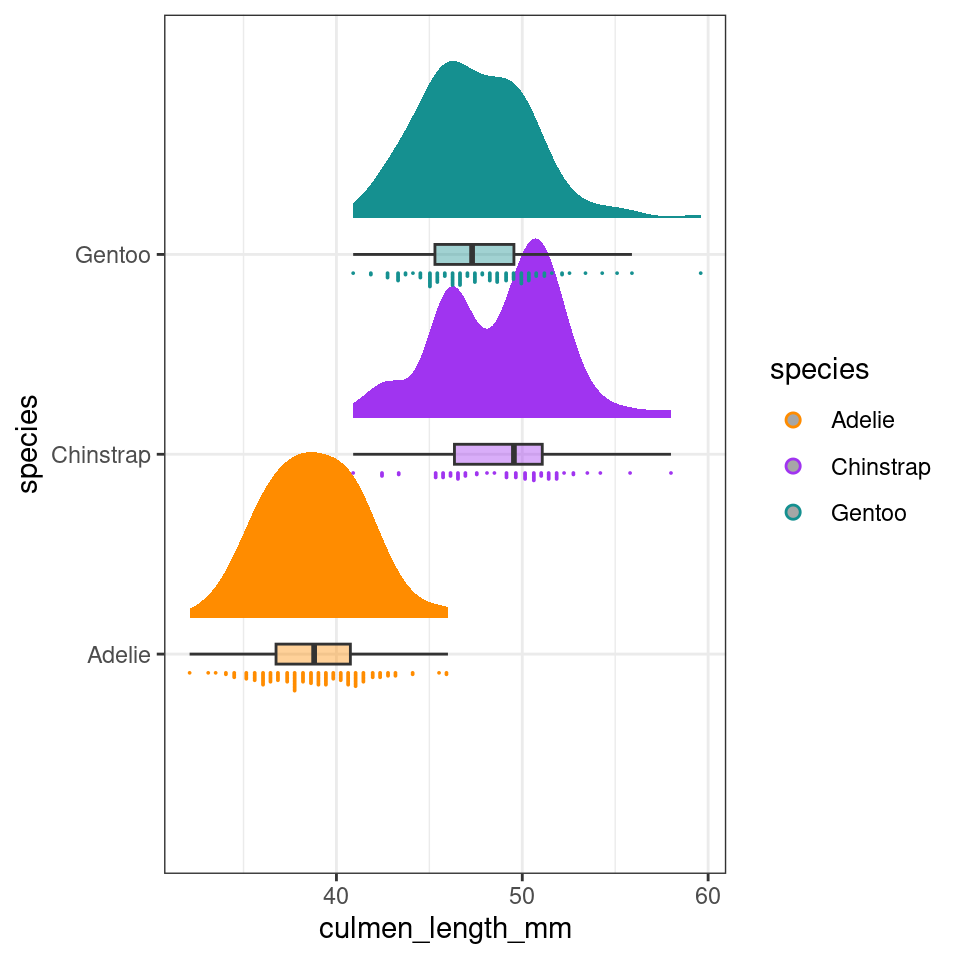
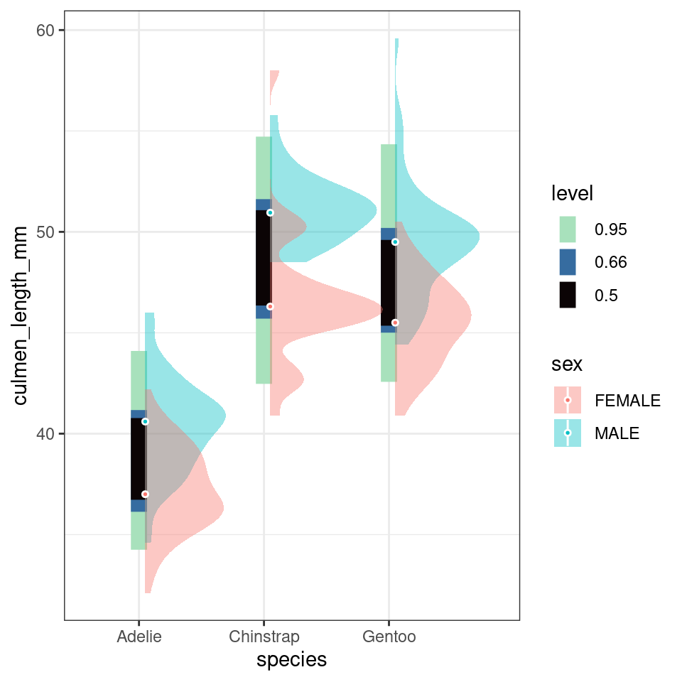
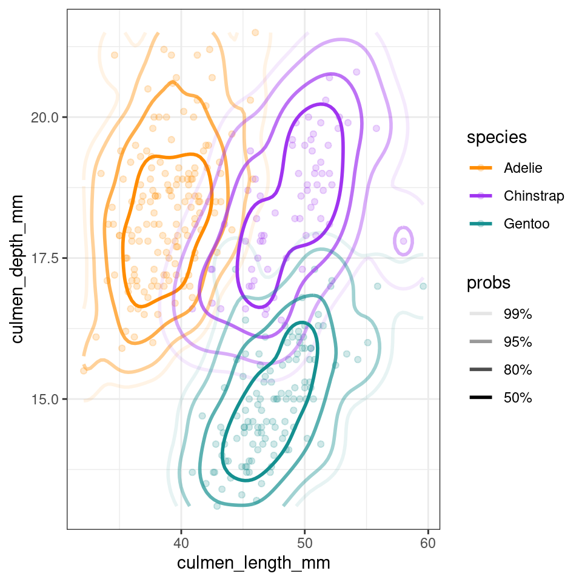
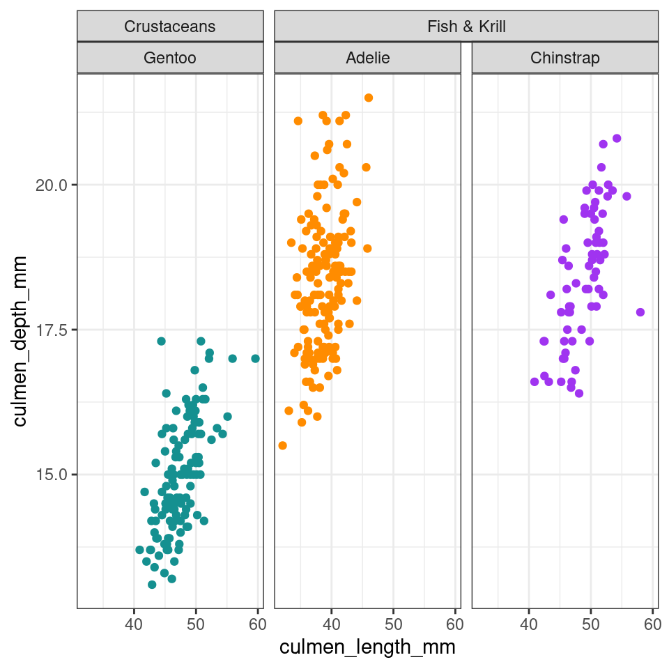
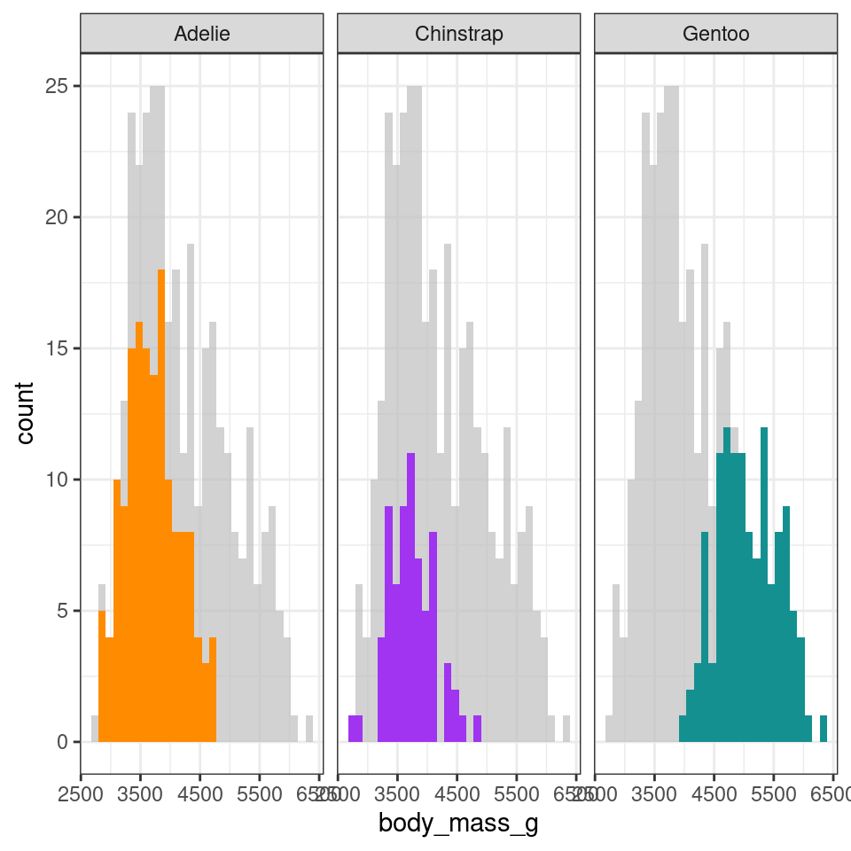
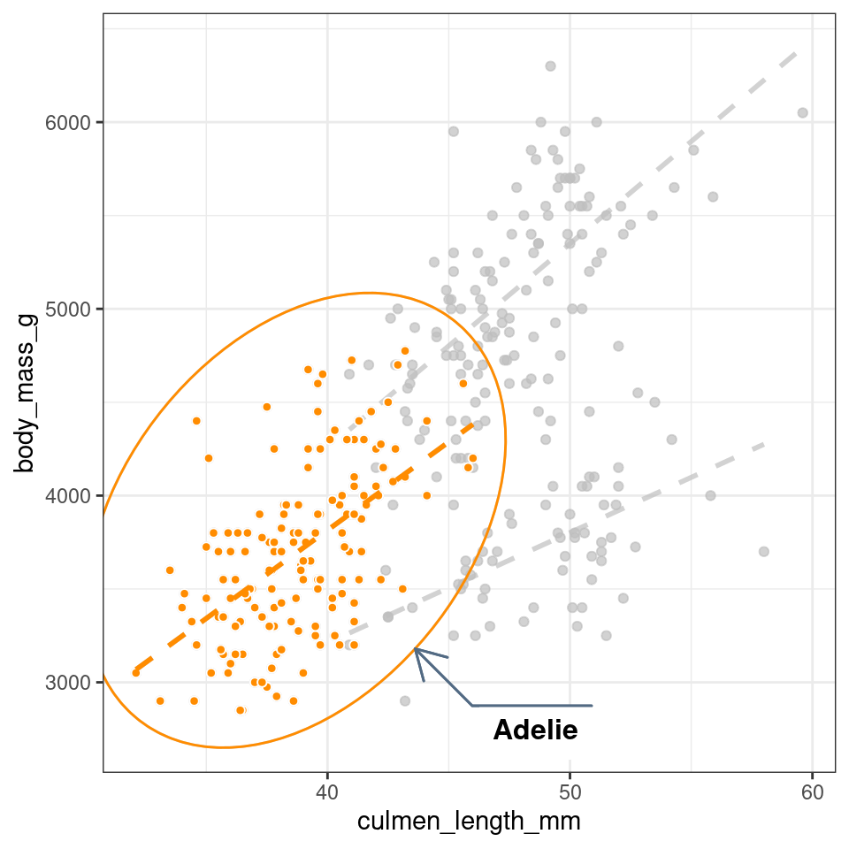
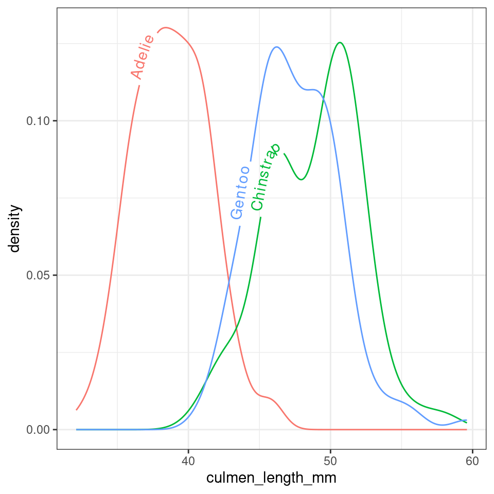
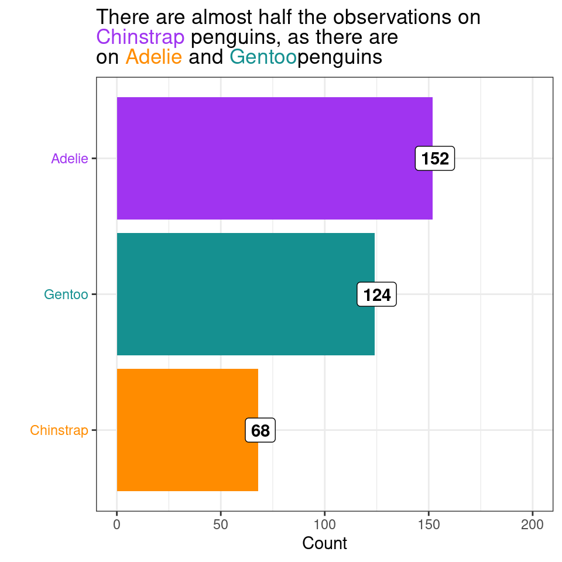
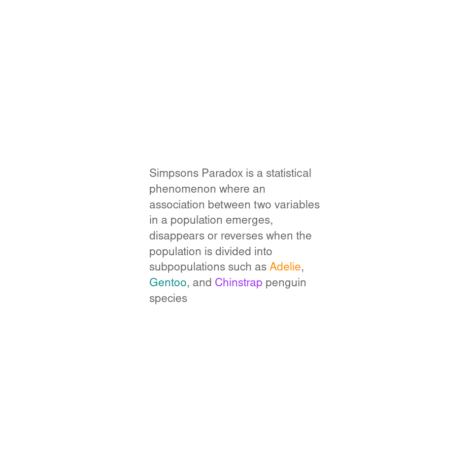
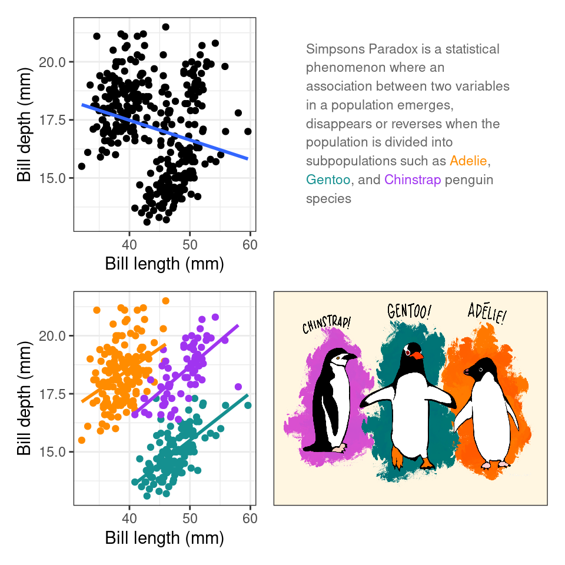

Chapter 29 Extensions for ggplot2
https://exts.ggplot2.tidyverse.org/
- gghighlight
- ggforce
29.1 ggdist
29.1.1 Rainclouds
library(ggdist)
penguins |>
ggplot(aes(x = species,
y = culmen_length_mm,
fill = species)) +
ggdist::stat_halfeye(
point_colour = NA,
.width = 0,
# shift raincloud up
justification = -.2)+
geom_boxplot(# remove outlier dots
outlier.shape = NA,
# shrink width of box
alpha = .4,
# fade box
width = .1)+
ggdist::stat_dots(aes(colour = species),
# put dots underneath
side = "left",
# move position down
justification = 1.1,
# size of dots
dotsize = .2,
# adjust bins (grouping) of dots
binwidth = .4)+
scale_fill_manual(values = pal) +
scale_colour_manual(values = pal)+
guides(fill = "none")+
coord_flip() # rotate figure
29.1.2 Interval stats
penguins |>
drop_na(sex) |>
ggplot(aes(x = species,
y = culmen_length_mm))+
ggdist::stat_interval(.width = c(.5, .66, .95))+
ggdist::stat_halfeye(aes(fill = sex),
.width = 0,
shape = 21,
colour = "white",
slab_alpha = .4,
size = .5,
position = position_nudge(x = .05))+
scale_color_viridis_d(option = "mako", direction = -1, end = .9)
29.2 Density
library(ggdensity)
penguins |>
ggplot(aes(x = culmen_length_mm,
y = culmen_depth_mm,
colour = species)) +
geom_point(alpha = .2) +
ggdensity::geom_hdr_lines()+
scale_colour_manual(values = pal)
29.3 ggridges
library(ggridges)
penguins |>
ggplot(aes(x = culmen_length_mm,
y = species,
fill = species)) +
geom_density_ridges() + # use hjust and vjust to position text
scale_fill_manual(values = pal) +
scale_colour_manual(values = pal)+
theme(legend.position = "none")
29.4 Bump charts
library(ggbump)
penguin_summary <- penguins |>
mutate(date_egg = dmy(date_egg)) |>
filter(clutch_completion == "Yes") |>
mutate(year = year(date_egg)) |>
group_by(species, year) |>
summarise(n = n())
penguin_summary |>
ggplot(aes(x = year,
y = n,
colour = species))+
geom_point(size = 7)+
geom_bump()+
geom_text(data = penguin_summary |> filter(year == max(year)),
aes(x = year + 0.1,
label = species,
hjust = 0),
size = 5)+
scale_x_continuous(limits = c(2007, 2009.5),
breaks = (2007:2009))+
labs(y = "Total number of complete clutches")+
scale_fill_manual(values = pal) +
scale_colour_manual(values = pal)+
theme(legend.position = "none")
29.5 Dumbell charts
library(ggalt)
summary_counts <- penguins |>
group_by(sex, species) |>
summarise(mean = mean(body_mass_g, na.rm = T)) |>
pivot_wider(names_from = sex, values_from = mean)
ggplot(summary_counts,
aes(y=species, x=FEMALE, xend=MALE)) +
geom_dumbbell(size=3, color="#e3e2e1",
colour_x = "#5b8124", colour_xend = "#bad744") +
geom_text( x=summary_counts[[3,2]], y=3, aes(label="Female"),
color="#9fb059", size=3, vjust=-2, fontface="bold")+
geom_text(x=summary_counts[[3,3]], y=3, aes(label="Male"),
color="#bad744", size=3, vjust=-2, fontface="bold")+
labs(x = "Body mass (g)",
y = "")
29.6 Facets
The ggh4x package adds some awesome features for easy facet work including facet_nested():
library(ggh4x)
penguins |>
mutate(Nester = ifelse(species=="Gentoo", "Crustaceans", "Fish & Krill")) |>
ggplot(aes(x = culmen_length_mm,
y = culmen_depth_mm,
colour = species))+
geom_point()+
facet_nested(~ Nester + species)+
scale_colour_manual(values = pal)+
theme(legend.position = "none")
29.7 Highlighting
library(gghighlight)
penguins |>
ggplot(aes(body_mass_g,
fill = species),
position = "identity")+
geom_histogram()+
gghighlight()+
scale_fill_manual(values = pal)+
facet_wrap(~ species)
library(ggbeeswarm)
library(gghighlight)
penguins |>
ggplot(aes(x = species,
y = body_mass_g,
fill = species))+
geom_beeswarm(shape = 21,
colour = "white")+
scale_fill_manual(values = pal)+
gghighlight(body_mass_g > 4000)
29.8 Text
29.8.1 ggforce
penguins |>
ggplot(
aes(x = culmen_length_mm,
y= body_mass_g,
colour = species)) +
geom_point(aes(fill = species), shape = 21, colour = "white") +
geom_smooth(method = "lm", se = FALSE,linetype = "dashed", alpha = .4)+
ggforce::geom_mark_ellipse(aes(
label = species,
filter = species == 'Adelie'),
con.colour = "#526A83",
con.cap = 0,
con.arrow = arrow(ends = "last",
length = unit(0.5, "cm")),
show.legend = FALSE) +
gghighlight(species == "Adelie")+
scale_colour_manual(values = pal)+
scale_fill_manual(values = pal)
29.8.2 textpaths
library(geomtextpath)
penguins |>
ggplot(aes(x = culmen_length_mm,
colour = species,
label = species))+
geom_textdensity( hjust = 0.35, vjust = .1)+ # use hjust and vjust to position text
theme(legend.position = "none")
29.8.3 ggtext
https://rfortherestofus.com/2020/05/color-titles-ggtext#:~:text=Adding%20color%20to%20titles%20using,HTML%2C%20not%20as%20raw%20text.
library(ggtext)
penguins |>
mutate(species = fct_relevel(species, "Chinstrap", "Gentoo", "Adelie")) |>
group_by(species) |>
summarise(n=n()) |>
ggplot(aes(x = species,
y = n,
fill = species))+
geom_col()+
geom_label(aes(label = n),
fill = "white",
nudge_y = 1,
colour = "black",
fontface = "bold")+
labs(x = "",
y = "Count",
title = paste(
'There are almost half the observations on <br> <span style = "color:#A034F0">Chinstrap</span> penguins, as there are <br> on <span style = "color:#FF8C00">Adelie</span> and <span style ="color:#159090">Gentoo</span>penguins'
))+
scale_fill_manual(
# when reordering levels - be careful about keeping colours consistent
values = c("#FF8C00", "#159090", "#A034F0"))+
coord_flip()+
scale_y_continuous(limits = c(0, 200))+
theme(legend.position = "none",
axis.text.y = element_text(
color = c("#FF8C00", "#159090", "#A034F0")),
plot.title = element_markdown())
29.9 Layouts and compositions
Patchwork, text and images!!!!
library(patchwork)
library(png)
library(ggpubr)
penguin_pic <- png::readPNG("images/lter_penguins.png")
penguin_fig <- ggplot() +
background_image(penguin_pic)text <- tibble(
x = 0, y = 0, label = 'Simpsons Paradox is a statistical phenomenon where an association between two variables in a population emerges, disappears or reverses when the population is divided into subpopulations such as <span style = "color:#FF8C00">Adelie</span>, <span style ="color:#159090">Gentoo</span>, and <span style = "color:#A034F0">Chinstrap</span> penguin species'
)
pt <- ggplot(text, aes(x = x, y = y)) +
ggtext::geom_textbox(
aes(label = label), # Map the 'label' column from the 'text' data to the text labels
box.color = NA, # Make the text box border color transparent
width = unit(10, "lines"), # Set the width of the text boxes to 15 lines
color = "grey40", # Set the text color to a light gray
size = 3, # Set the text size to 4 (adjust as needed)
lineheight = 1.4 # Set the line height for text within the boxes
) +
# Customize the plot coordinate system
coord_cartesian(expand = FALSE, clip = "off") +
# Apply a theme with a blank (void) background
theme_void()
pt
layout <- "
AACCC
AACCC
BBDDD
BBDDD
"
p1 <- ggplot(penguins, aes(x= culmen_length_mm,
y= culmen_depth_mm)) +
geom_point()+
geom_smooth(method="lm",
se=FALSE)+
theme(legend.position="none")+
labs(x="Bill length (mm)",
y="Bill depth (mm)")
p2 <- ggplot(penguins, aes(x= culmen_length_mm,
y= culmen_depth_mm,
colour=species)) +
geom_point()+
geom_smooth(method="lm",
se=FALSE)+
scale_colour_manual(values=pal)+
theme(legend.position="none")+
labs(x="Bill length (mm)",
y="Bill depth (mm)")
p1 + p2 +
pt + penguin_fig +
plot_layout(design = layout)
29.10 Scales
29.11 Activity: Create a Publication-Style Multi-Panel Figure
Objective: Design and create a multi-panel data visualization figure in the style of a research publication. This exercise will challenge your skills in data visualization, data manipulation, and creating complex figures.
Steps:
Choose a Dataset: Select a dataset that is suitable for creating a multi-panel figure. It could be related to a scientific research topic, public data (e.g., from government sources or data repositories), or any other dataset that interests you.
Data Preprocessing: Use dplyr and tidyr to preprocess the data. You may need to aggregate, filter, or reshape the data to fit the structure you want for your figure.
Design the Figure: Decide on the structure of your multi-panel figure. You could create subplots or facets to represent different aspects of the data. For example, you might have multiple box plots, scatter plots, or other visualizations arranged in a grid.
Create the Plot: Use ggplot2 to create the individual panels or subplots. Customize the appearance of each panel, including labels, colors, and titles.
Combine the Panels: Use the patchwork package or another method to arrange the individual panels into a single figure. This may involve adjusting the layout, labeling, and legends to make the figure coherent.
Add Annotations: Add relevant annotations to the figure, such as titles, subtitles, captions, and any necessary notes to explain the data or results.
Customize the Theme: Apply a custom theme to the entire figure. You can modify fonts, colors, grid lines, and other elements to match the style of a publication.
Tips:
Plan your figure carefully, considering what story or message you want to convey. Experiment with different geoms, scales, and themes to achieve the desired visual effect. Use effective data visualization principles, such as avoiding misleading scales, providing clear labels and legends, and ensuring that the figure is accessible to a wide audience.